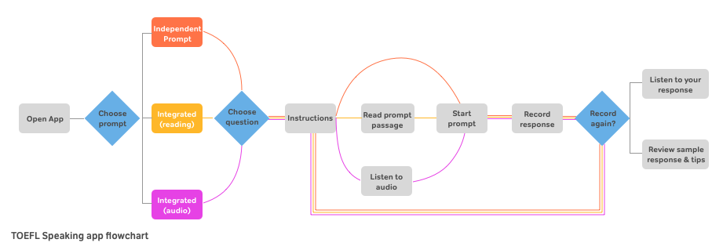
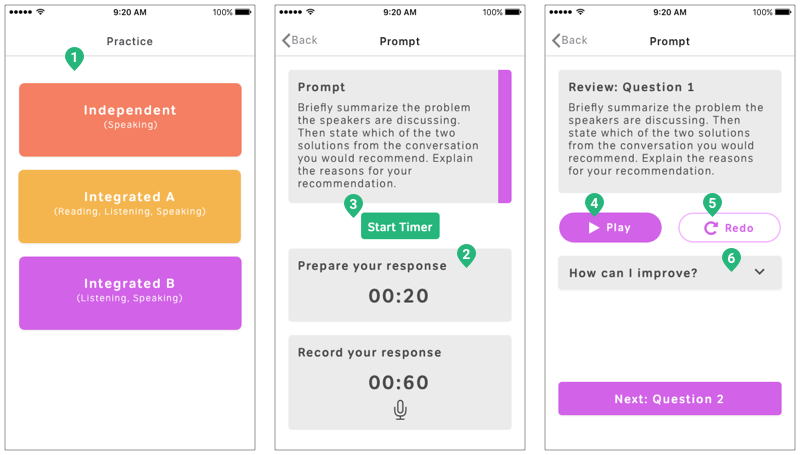
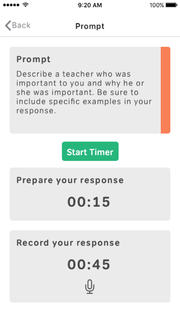
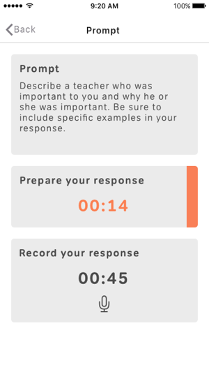
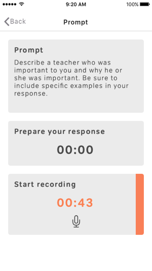

The Magoosh TOEFL Speaking app brings together speaking practice, familiarity with the exam format, and sample responses in a simple yet effective tool.
our goal
Create a lead-generation mobile app that ranks #1 on Android and iOS for keyword "TOEFL Speaking".
See the app in action on Google Play or Apple Appstore.
* Within 3 months of launch, we achieved our goal of replacing the previous top ranked apps in both Google Play and Apple stores for the keyword “TOEFL Speaking”.
* This app has maintained over a 4.5 star rating in both Google Play and Apple app stores since its launch in June 2017.
my role
I worked on the UX/UI for this project and also helped prioritize features to build. I additionally created promotional assets for launch. I worked with product manager, Sam Ju, and engineer, Zack Mayeda.
background
During this quarter of work, one of our company goals was to increase the top-of-funnel for our TOEFL product. This project began as an effort to address this goal.
We learned in user interviews that TOEFL students struggle most with the Speaking section of the exam, but they also lacked good tools to practice and improve their English speaking. We set out to meet this need by developing a mobile TOEFL speaking product for our students and other TOEFL studiers.
our approach to conquering the space
At the start of this project, one of our primary objectives was to differentiate our product from competitors with a value-add feature or feature set. Nearly all the existing products in this space provided the same features: follow a prompt, record yourself, play-back your recording, review a sample answer (text or audio), and receive general feedback on how to improve your response.
We wanted to introduce more personalized feedback in the form of automated speech recognition or human feedback. We believed that this would help us rise above existing competitors and give us an additional lift from satisfied users telling their friends.
Provide instant speaking feedback using a speech recognition API
- We ran a lightweight experiment with Google’s speech recognition API to test interest in this feature. We sent students an email with instructions to read a given prompt into Google’s API and review the results. This feedback type was intended to address issues with pronunciation, which students cited as a key challenge.
- PRO: This technology would be costly to implement, and this was a cheap way to test whether students understood and valued the interaction.
- CON: This was an incredibly clunky and friction-filled experience.
* Although students expressed excitement for this idea during user testing, the technical ability of the API to recognize long, spoken passages was inadequate to be actually useful.
Provide human speaking feedback
- PRO: We have a built-in team of tutors available to test this with minimal cost. Human feedback is accurate.
- CON: This proved incredibly costly and too difficult to scale for a non-paying audience at this time. There was also a long response time for students to receive feedback.
* For this idea, we learned that students valued instant feedback over the thoroughness and accuracy of a human grader.
where we ended up
Ultimately we landed on creating a more user-friendly version of the features that were available in the market. We would compete with existing apps through the strength of our content, and we would make the interface simple and enjoyable to use.
Key features
Prompts for the 3 TOEFL Speaking sections
Record a response to the prompt
A countdown timer
Play back the response
 Re-record a response
Re-record a response
Listen to a sample response and strategies to improve
something extra
The TOEFL Speaking exam has very specific time allocations for every step of the flow. One of my favorite features in the app is a color bar that tells students which part of the prompt they’re currently on. The color bar automatically moves to the next step of the prompt once the time for the current step is finished.
  Since this tool was meant to help students practice the TOEFL Speaking exam rather than replicate it exactly, I designed the prompt screen to show all steps of the prompt at once. This way students are able to familiarize themselves with the test format and question types by seeing what step they are in during the answering process.
learnings
We were able to take over the top spot for "TOEFL speaking" in both Android and iOS stores by creating a more user-friendly app with a very similar feature set to what was already out there. However, reaching #1 for keyword “TOEFL Speaking” did not translate into the high number of downloads we were aiming for. This was due to our decision to forego building out a value-add feature that would differentiate us from competitors. As a result we couldn't capitalize on the word-of-mouth multiplier that was built into our impact model.